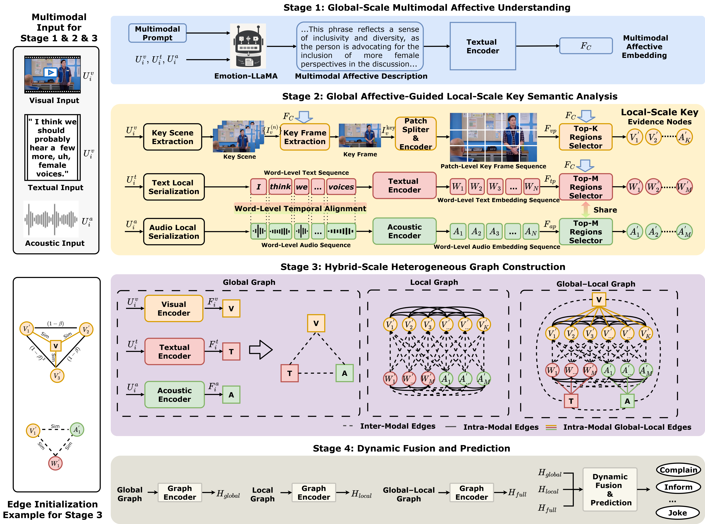

H²GF-Net
Hybrid-scale Heterogeneous Graph Fusion for Multimodal Intent Recognition
Abstract
Multimodal Intent Recognition (MIR) aims to infer a speaker’s communicative intent by integrating heterogeneous
textual, acoustic, and visual signals. However, intent-related cues are often distributed across fine-grained
local variations and global semantic representations, making it challenging for existing approaches to explicitly
model cross-modal and local-global dependencies within a unified framework. To address this challenge, we propose
the Hybrid-scale Heterogeneous Graph Fusion Network (H$^2$GF-Net), which integrates affective semantic prior–guided
local key information selection with progressive hybrid-scale heterogeneous graph modeling for multimodal intent understanding.
Specifically, the model first performs global-scale multimodal affective semantic understanding by generating high-level
affective-intent semantic descriptions, which serve as semantic priors beyond conventional emotion features. Guided by these
priors, H$^2$GF-Net explicitly selects intent-relevant local units across textual, acoustic, and visual modalities, enabling
precise localization of critical multimodal cues. Furthermore, a progressive hybrid-scale heterogeneous graph is constructed
to capture dependencies between local and global representations as well as cross-modal interactions, and these graph representations
are integrated through structure-aware graph fusion to support intent prediction. Experimental results demonstrate that the proposed
method consistently outperforms state-of-the-art approaches on a benchmark dataset, while additional generalization evaluations
further verify its robustness under extended evaluation settings.
Model Architecture

Demo Examples
Multimodal Input
Multimodal Affective Description in Stage1
Variables in Stage2
Final Prediction
Case 1

“Okay, anyway, I need to get a head count so I know who’s coming.”

Bot's message: Based on the video provided...
(你完整粘贴 Stage1 文本在这里)
Top-M Patches of Text (M=5%)
Top-K Patches of Keyframe (K=10%)

Head Count
Top-K Patches of Keyframe (K=10%)
Ground Truth: Inform
H²GF-Net: Inform
MAG-BERT: Ask for help
MuLT: Taunt
MISA: Ask for help
TCL-MAP: Ask for help
H²GF-Net: Inform
MAG-BERT: Ask for help
MuLT: Taunt
MISA: Ask for help
TCL-MAP: Ask for help
Case 2

“Yeah, but I don’t think anyone should have that much power.”

(粘贴 Case2 的 Stage1 描述)
Top-M Patches of Text (M=5%)
Top-K Patches of Keyframe (K=10%)

Anyone Power
Top-K Patches of Keyframe (K=10%)
Ground Truth: Oppose
H²GF-Net: Oppose
MAG-BERT: Complain
MuLT: Criticize
MISA: Complain
TCL-MAP: Criticize
H²GF-Net: Oppose
MAG-BERT: Complain
MuLT: Criticize
MISA: Complain
TCL-MAP: Criticize